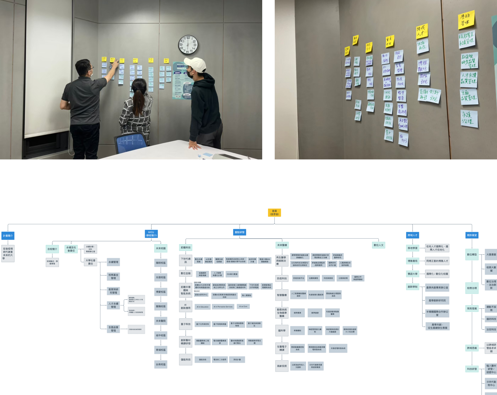
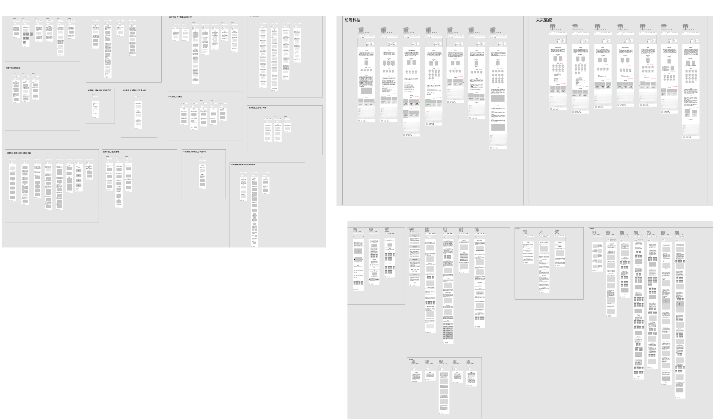

NYCU Website Redesign — UX Design Case Study
NYCU Website
Redesign
Redesigning the Cultivation Plan platform to make university research accessible and engaging

Background
NYCU's "Cultivation Plan" website was created to showcase the university's research directions and future plans to external audiences — primarily industry alumni and prospective students. The first version launched in 2021, but user feedback and internal review revealed significant usability issues that were reducing engagement and making it harder for users to find relevant information.
In 2022, the Communication and Outreach Office commissioned a full redesign. The primary challenge was information volume: the first version contained a large amount of content that was costly to migrate in full. This required clear prioritization — identifying what information was critical to surface directly, and what could be expressed more efficiently through visual design rather than text.
My Role
Led all UX design work on a cross-functional team of 10 — owning information architecture, wireframes, and mockup review. Bridged communication between the design team, front-end engineers, and stakeholders to align on requirements and keep the project moving.
Problem Statement
We conducted usability testing on the first version with 4 target users and identified three core issues:
Complex information architecture
Category titles were unclear, making it difficult for users to determine where their desired information was located. Research content — which users considered most important — required multiple steps to access.
Interaction design not aligned with user habits
Significant differences from typical informational websites created a learning curve, reducing browsing efficiency for first-time visitors.
Content presentation reduced browsing motivation
Research content required additional file downloads to view. Information appeared disorganized and lengthy, discouraging users from reading further.
Design Process

Information Architecture — Card Sorting Workshop
After reviewing the first version's content, I identified that category titles lacked clarity and didn't convey the scope of information they covered. I led an internal workshop to redesign the IA from scratch — collaboratively creating a new sitemap and determining page title names through structured card sorting exercises.

Wireframe — Component-First Approach
Given the large volume of data and content variation across pages, I began by reviewing all copy content, then created adaptable components that could accommodate different data scenarios — prioritizing budget efficiency without compromising flexibility. Development followed a Scrum-like approach across 4 stages aligned with the sitemap structure, handing off each completed stage to the UI designer before moving to the next.
Heuristic Evaluation
Using Nielsen's 10 usability heuristics on high-fidelity prototypes across iOS, Android, macOS, and Windows devices, we identified 2 priority issues: inconsistency in image display before and after interaction, and missing clickable links in laboratory descriptions. Both were resolved before proceeding to usability testing.
Usability Testing
Recruited 4 students and 4 alumni for usability testing on the redesigned site. Issues were prioritized into three levels — high, medium, and low — with high and medium priority items addressed before launch. Results confirmed improved navigation efficiency and content discoverability across both user groups.
Result
"The new version's structure is consistent, making it easy for me to quickly find what I need, even if I'm not familiar with the categories."
"The new version is a lot easier to use. The categories are clearer, making it more user-friendly."
Self-Reflection
Filtering requirements for smoother execution
With numerous stakeholders, internal meetings often generated many new ideas that risked scope creep. I developed a habit of filtering requirements against the original project goals in real time — and when certain features weren't feasible within timeline or budget, I learned to present the technical reasoning clearly to stakeholders rather than simply saying no.
Planning under a tight timeline
With a large number of pages to design and a tight schedule, I listed all pages first, prioritized by urgency, and reviewed content complexity with the team before estimating workdays. This collaborative planning approach kept the project on track without sacrificing design quality.